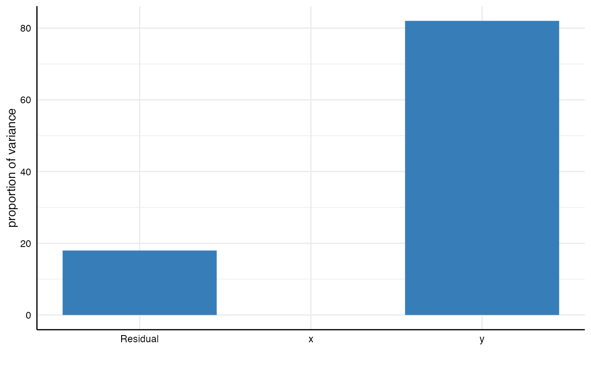

This functions creates a simple barplot that visually displays how much variance in the outcome (e.g., the regression coefficient) different analytical choices or combinations therefor account for. To use this approach, one needs to estimate a multilevel model that includes all analytical choices as grouping variables (see examples and vignettes). This function uses icc_specs() to compute the intraclass correlation coefficients (ICCs), which provides the data basis for the plot (see examples).
plot_variance(model)
| model | a multilevel model that captures the variances of the specification curve (based on the data frame resulting from |
|---|
a ggplot object.
icc_specs() to produce a tibble that details the variance decomposition.
# Step 1: Run spec curve analysis results <- run_specs(df = example_data, y = c("y1", "y2"), x = c("x1", "x2"), model = c("lm")) # Step 2: Estimate multilevel model library(lme4, quietly = TRUE)#> Warning: package ‘lme4’ was built under R version 3.6.2model <- lmer(estimate ~ 1 + (1|x) + (1|y), data = results) # Step 3: Plot model plot_variance(model)